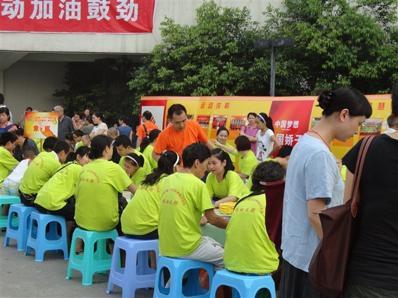
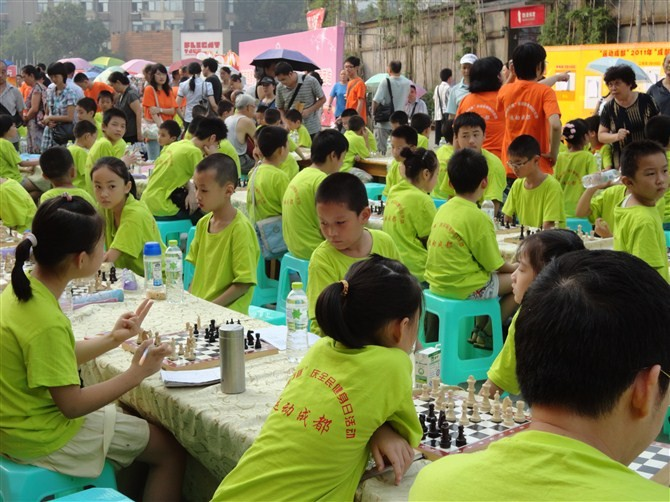
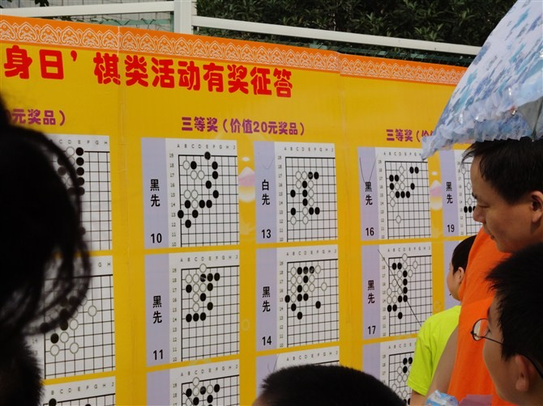
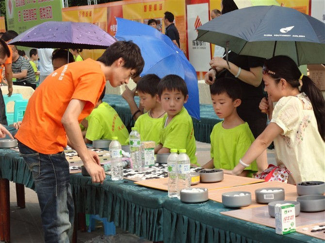

2011年成都全民健身日五子棋活动照片
首页
五子棋新闻
#1 2011年成都全民健身日五子棋活动照片 作者：土豆果子 发表时间：2011-8-8 22:18:42

陈新在指导爱好者
［ 路痴 于 2011-8-8 22:24:40 时花20金币送鲜花一朵］
［ 路痴 于 2011-8-8 22:25:34 时花20金币送鲜花一朵］
［ 潇洒 于 2011-8-8 22:27:51 时奖励此帖[金币加 100 威望加1］
［ 天籁之琴 于 2011-8-9 10:38:13 时花20金币送鲜花一朵］
［ 天籁之琴 于 2011-8-9 10:38:54 时花20金币送鲜花一朵］
［ 魔铃 于 2011-8-10 8:23:13 时花20金币送鲜花一朵］
#2 Re:2011年成都全民健身日五子棋活动照片 作者：明年近日 发表时间：2011-8-8 22:20:18
瓦罗蒂大师
#3 Re:2011年成都全民健身日五子棋活动照片 作者：土豆果子 发表时间：2011-8-8 22:20:40

这个是国际象棋的活动
#4 Re:2011年成都全民健身日五子棋活动照片 作者：土豆果子 发表时间：2011-8-8 22:21:27

有奖答题，最高难度奖金500。现场看到有人拿终结者在算
#5 Re:2011年成都全民健身日五子棋活动照片 作者：土豆果子 发表时间：2011-8-8 22:22:36

这个其实是围棋
#6 Re:2011年成都全民健身日五子棋活动照片 作者：岳麓小棋后 发表时间：2011-8-8 22:23:59
有意思，我也想凑热闹耶
#7 Re:2011年成都全民健身日五子棋活动照片 作者：飞翔 发表时间：2011-8-8 22:25:58
不错啊！很热闹
#8 Re:2011年成都全民健身日五子棋活动照片 作者：土豆果子 发表时间：2011-8-8 22:33:23
嘎嘎 给我两威望吧 吼吼~~
#9 Re:2011年成都全民健身日五子棋活动照片 作者：梧桐风 发表时间：2011-8-8 22:40:21
嗯嗯，真不错啊小盆友啊，哪位大神竟然带终结者去现场……［此帖子已被 梧桐风 在 2011-8-8 22:44:51 编辑过］
#10 Re:2011年成都全民健身日五子棋活动照片 作者：怪 发表时间：2011-8-8 23:04:39
哪位大剑客竟然带终结者去现场……
#11 Re:2011年成都全民健身日五子棋活动照片 作者：小丸.net 发表时间：2011-8-8 23:06:02
但是我想，楼主说的那张终结者的图的，这些题目是围棋的死活题啊。。。（怎么看都不像五子棋的）
难道围棋也有终结者。
［ 老黄 于 2011-8-8 23:09:16 时花20金币送鲜花一朵］
#12 Re:2011年成都全民健身日五子棋活动照片 作者：清风明月月 发表时间：2011-8-8 23:39:34
是围棋是死活题,
#13 Re:2011年成都全民健身日五子棋活动照片 作者：一期一会 发表时间：2011-8-8 23:52:15
 偶只看摔锅~~~
偶只看摔锅~~~
#14 Re:2011年成都全民健身日五子棋活动照片 作者：自来水 发表时间：2011-8-9 8:26:05
围棋软件解一个死活问题不大..
#15 Re:Re:2011年成都全民健身日五子棋活动照片 作者：掌棋如烟 发表时间：2011-8-9 8:59:44
引用：
原文由 土豆果子 发表于 2011-8-8 22:21:27 :
有奖答题，最高难度奖金500。现场看到有人拿终结者在算
我爸他们单位元旦联欢猜灯谜,小年轻就一人拿个手机在百度,都把奖品领走了,给老同志们气坏了...
#16 Re:2011年成都全民健身日五子棋活动照片 作者：猪无戒 发表时间：2011-8-9 9:42:24
0这个很好啊！
#17 Re:2011年成都全民健身日五子棋活动照片 作者：傀儡 发表时间：2011-8-9 10:10:49
赞~~~希望各地都能有这么好的活动啊~~~~
#18 Re:2011年成都全民健身日五子棋活动照片 作者：暴力连珠 发表时间：2011-8-9 10:18:01
 楼主是哪只吖？
楼主是哪只吖？
#19 Re:2011年成都全民健身日五子棋活动照片 作者：润本 发表时间：2011-8-9 19:49:43
如果可以带手提电脑的话，１０００元的题应该也解得出来
#20 Re:2011年成都全民健身日五子棋活动照片 作者：南京小飞机 发表时间：2011-8-9 20:22:32
小胖子自己靓照呢？
#21 Re:2011年成都全民健身日五子棋活动照片 作者：土豆果子 发表时间：2011-8-10 10:31:52
 我不认识你
我不认识你
#22 Re:2011年成都全民健身日五子棋活动照片 作者：梧桐风 发表时间：2011-8-10 10:34:04

#23 Re:Re:Re:2011年成都全民健身日五子棋活动照片 作者：梧桐风 发表时间：2011-8-11 10:51:49
引用：
原文由 掌棋如烟 发表于 2011-8-9 8:59:44 :
引用：
原文由 土豆果子 发表于 2011-8-8 22:21:27 :
有奖答题，最高难度奖金500。现场看到有人拿终结者在算
我爸他们单位元旦联欢猜灯谜,小年轻就一人拿个手机在百度,都把奖品领走了,给老同志们气坏了...
这事俺以前没少干
［此帖子已被 梧桐风 在 2011-8-11 10:52:10 编辑过］